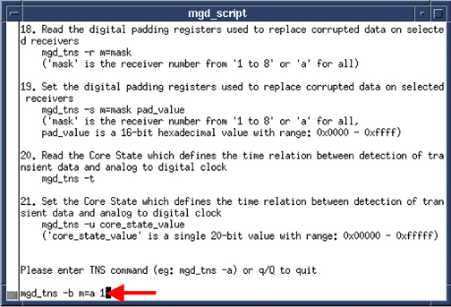
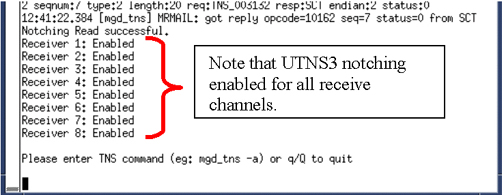

Operating Documentation
Direction 5670000, Rev# 1
Optima MR450w 1.5T Service Methods
Module Version 1.0, Version Date 5/15/07
Operating Documentation |
| Required Persons | Preliminary Reqs | Procedure | Finalization |
|---|---|---|---|
| 1 | Not Applicable | 5 mins | Not Applicable |
If the system is equipped with a UTNS3 (This does not apply to UTNS or UTNS2.) See Step for procedure to stop the UTNS3 and then Step for turning the UNTS3 back on.
| Last Update | 09/23/2005 |
On the Common Service Desktop go to the [Utilities] button, select TNS Software Control and [Click here to start this tool].
Once the mgd_script page opens, at the command line type: mgd_tns -b m=a 0<Enter> to turn off the UNTS3. See Illustration 1.
Illustration 1: Command Line to Stop UTNS3

You’ll see the Notching Write successful if the shut down was successful. See Illustration 2
Illustration 2: Notching Write Successful Statement

Leave the window open. Closing the window will enable the UTNS3 again.
On the Common Service Desktop go to the [Utilities] button, select TNS Software Control and [Click here to start this tool].
Once the mgd_script page opens, at the command line type: mgd_tns -b m=a 1<Enter> to turn on the UNTS3. See Illustration 3.
Illustration 3: Starting The UTNS3

To see if the command was successful, type mgd_tns –a, to see if notching was enabled for all channels. See Illustration 4.
Illustration 4: Successful UTNS3

Select q to exit from the window.
No finalization steps.